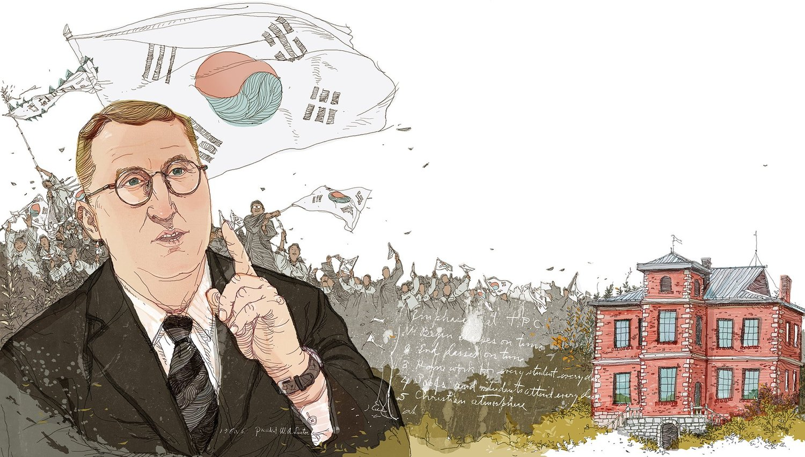

William Alderman Linton(🇺🇸 ):
[1883. 1. 23 ~ 1979. 1.20]
Achievements
Educational Missionary in Korea:
- Moved to Korea in 1912 and engaged in various charitable activities, focusing on education.
- Conducted extensive self-directed research, including Korean language training, and earned additional degrees from Columbia Teacher's College and Columbia Theological Seminary to better serve his mission.
Fought for Korean Students' Rights:
- As the principal of Jeonju Shinheung High School, Linton fought for the rights of Korean students under Japanese rule.
- Resisted Japanese colonial policies by refusing to participate in Shinto shrine worship, leading to the school's forced closure in 1937.
- Continued to advocate for Korean students' education by seeking recognition from the Japanese Government-General of Korea's Bureau of Education to ensure their access to higher education.
Founded Daejeon College:
- After Japanese colonial rule and the Korean War, Linton founded Daejeon College in 1956, serving as its first president.
- Daejeon College eventually evolved into Hannam University in 1982, continuing his legacy in Korean education.
Family Legacy of Service in Korea:
- His sons, Hugh Linton and Thomas Dwight Linton, continued his mission in Korea by planting churches, establishing tuberculosis clinics, and contributing to Christian missions.
- Hugh Linton planted over 600 churches and established several tuberculosis clinics during the 1960s.
- John Alderman Linton, his grandson, became the director of Severance Hospital's International Care Center and invented a new type of ambulance for Korea in 1993. He was granted Korean citizenship in 2012 for his contributions to Korean society.
- Stephen Winn Linton, another grandson, founded the Eugene Bell Foundation, which has provided medical aid to over 200,000 North Korean tuberculosis patients.
- Despite the closure of his school and the challenges under Japanese rule, Linton remained dedicated to his mission of educating and supporting Korean students.
- His efforts and those of his descendants have left a lasting impact on Korean society, particularly in the fields of education, healthcare, and Christian missions.